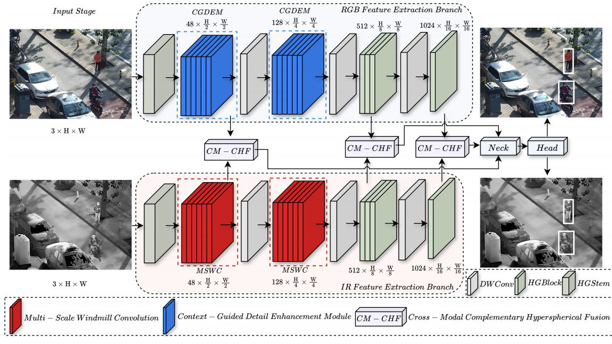
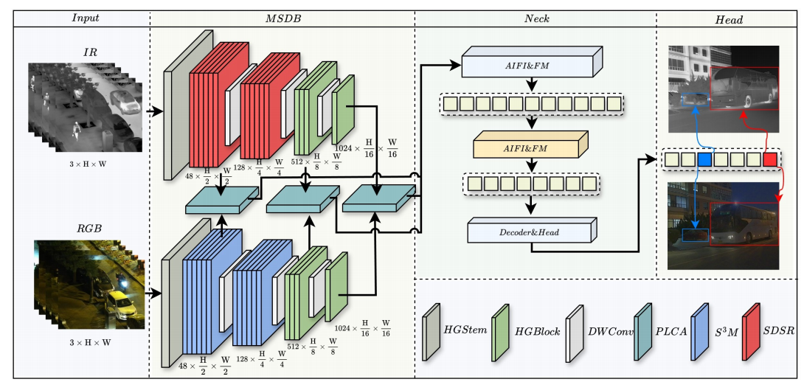
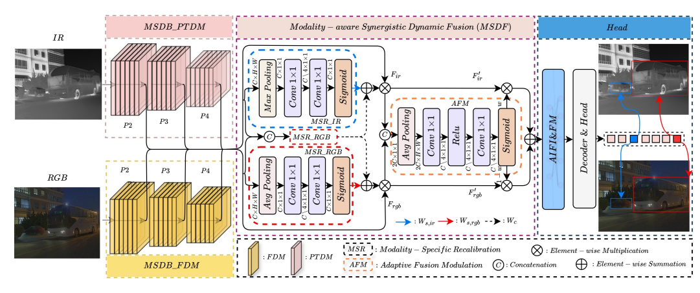
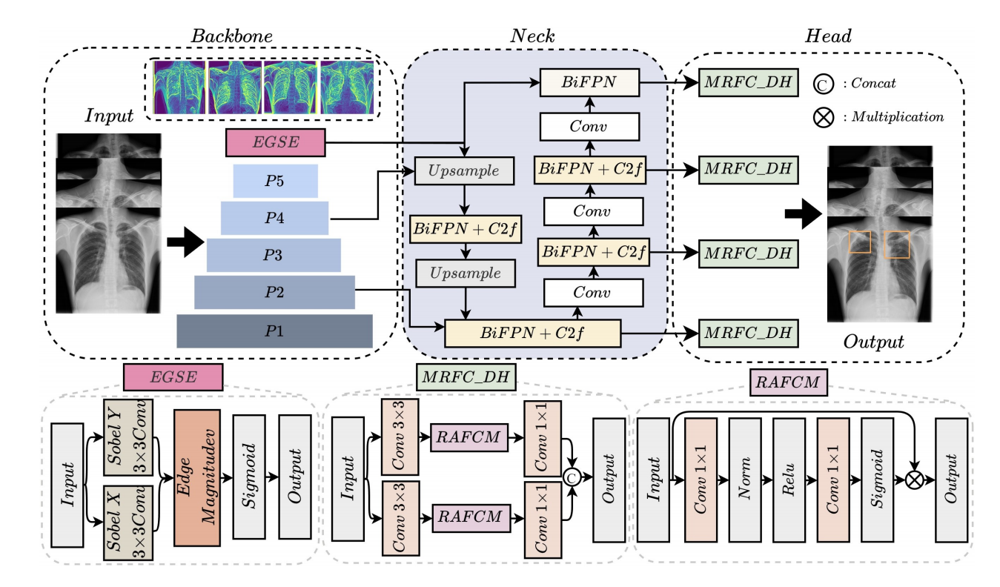
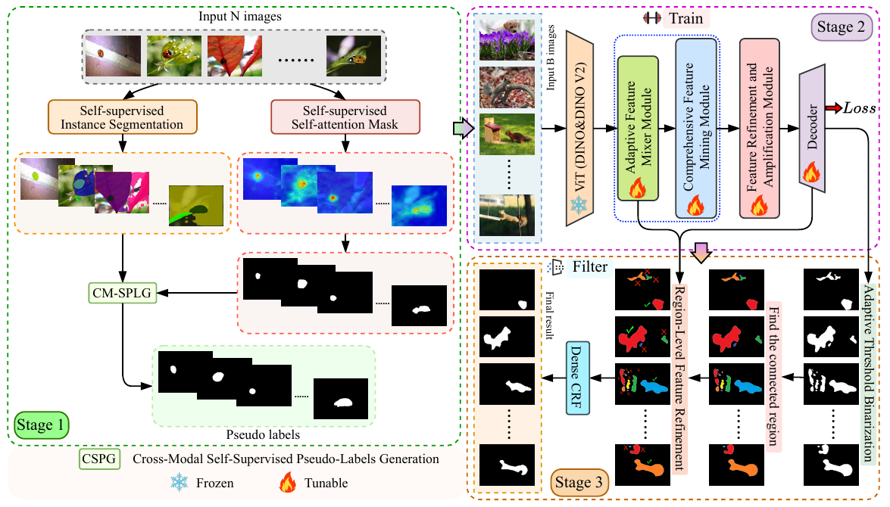
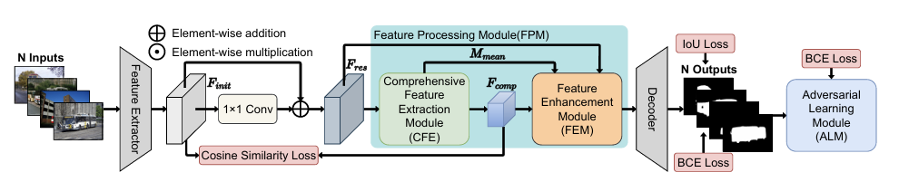

HPHF-MMDet: Heterogeneous Perception and Hyperspherical Fusion for Multimodal Object Detection
IEEE Transactions on Circuits and Systems for Video Technology, 2026.
Qilu University of Technology Shandong Academy of Sciences
I am Zhengyang Zhang, a graduate student at Qilu University of Technology (Shandong Academy of Sciences), under the supervision of Professor Guohua Lv.
My research focuses on object detection.
I received the National Scholarship and the First-Class Academic Scholarship.
One paper has been accepted by IEEE Transactions on Circuits and Systems for Video Technology (TCSVT).
One paper has been accepted by IEEE International Conference on Multimedia and Expo (ICME 2026).
Two papers have been accepted by IEEE International Conference on Acoustics, Speech and Signal Processing (ICASSP 2026).
One co-authored paper has been accepted by Chinese Conference on Pattern Recognition and Computer Vision (PRCV 2025).
One co-authored paper has been accepted by IEEE International Conference on Acoustics, Speech and Signal Processing (ICASSP 2025).
M.S. in Computer Technology · Jinan, China
* Equal contribution.

IEEE Transactions on Circuits and Systems for Video Technology, 2026.

IEEE International Conference on Multimedia and Expo (ICME), 2026.

IEEE International Conference on Acoustics, Speech and Signal Processing (ICASSP), 2026.

IEEE International Conference on Acoustics, Speech and Signal Processing (ICASSP), 2026.

Chinese Conference on Pattern Recognition and Computer Vision (PRCV), 2025, pp. 436–450.

IEEE International Conference on Acoustics, Speech and Signal Processing (ICASSP), 2025.